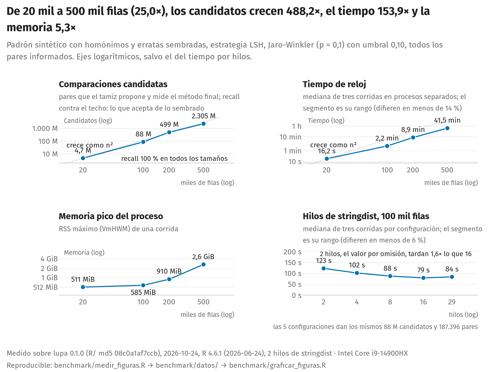
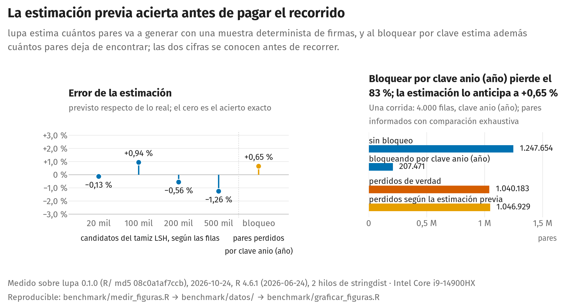
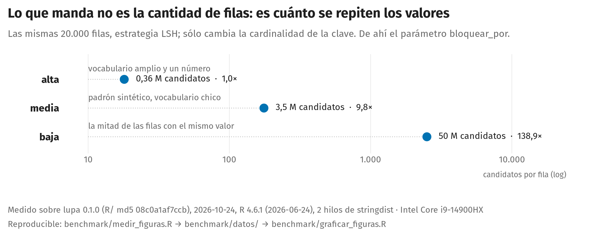
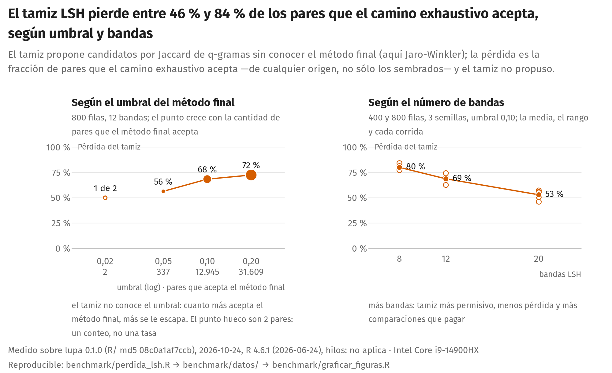

Evidencia y rendimiento
Source:vignettes/articles/evidencia-y-rendimiento.Rmd
evidencia-y-rendimiento.RmdCada comprobación de lupa usa una unidad y una
referencia declaradas, y son distintas entre sí: ninguna estima una
exactitud única para todo el paquete. Este artículo reúne las cifras de
evidencia y de rendimiento que publica la documentación, cada una con su
unidad, su clase y la forma de rehacerla.
Cuatro clases de cifra
| Clase | Qué significa | Qué se publica junto a la cifra |
|---|---|---|
| Fija, sin red | sale de un fixture versionado o del código; una prueba la fija o esta página la calcula al construirse | la prueba o el guion que la produce |
| Requiere un motor | necesita un servidor de base de datos y su controlador | motor y versión, controlador, fixture, fecha y revisión |
| Recurso descargado | el insumo se baja de la red y puede cambiar | la fuente, la fecha de la corrida y la huella del archivo |
| Corrida única | se midió una vez sobre datos que el repositorio no tiene | la fecha y el alcance; no se rehace desde el repositorio |
Las cifras que requieren un motor (la matriz de motores, los costos
de consulta, la memoria de perfilar_dbi()) están en Motores
y escala.
La tabla de evidencia
| Comprobación | Unidad | Resultado | Clase | Se reproduce con |
|---|---|---|---|---|
| Controles limpios construidos | 31 tablas | 0 hallazgos de severidad error; 8 señales para
revisar |
fija, sin red; calculada en esta página | test-regresion-107.R |
| Pares dirty/clean de Raha | columnas con al menos una celda cambiada | 26 de 26 recibieron al menos un hallazgo; se señalaron 8 columnas más | recurso descargado; corrida del 2026-10-24 |
verdad_raha.R
y medir_lupa.R
|
| Registro público de sanciones a empresas | hallazgos de severidad error
|
9 de 9 coinciden con la misma cuenta hecha en R base, sobre una copia de 2.583 filas | recurso descargado; corrida del 2026-10-24, con la huella del archivo | medir_sanciones.R |
| Ausencia estructural | señales posible_ausencia_estructural
|
ninguna en 20 conjuntos de datasets y 60 tablas al
azar; dispara en los tres casos positivos; calla con 10 % de ruido |
fija, sin red; corrida del 2026-10-24 | banco_ausencia_estructural.R |
| Reparación de codificación | casos del corpus de ftfy 6.3.1 | 159 de 161 reproducidos | fija, sin red; calculada en esta página | test-reparacion-texto.R |
Controles limpios construidos
Las 31 tablas limpias se construyen a propósito con las formas que
más confunden a un perfilador: decimales con coma, fechas, booleanos y
porcentajes guardados como texto, identificadores correlativos, códigos
postales, teléfonos, correos, documentos, nombres de persona y una
distribución lognormal, entre otras. No deberían producir ningún
error. La cifra la fija
tests/testthat/test-regresion-107.R, y esta página la
vuelve a calcular con el mismo generador al construirse.
length(tablas_limpias)
#> [1] 31
table(severidad = hallazgos_limpios$severidad)
#> severidad
#> ok sospechoso error
#> 89 8 0
print(senales[, c("tabla", "columna", "tipo_hallazgo")], row.names = FALSE)
#> tabla columna tipo_hallazgo
#> decimales_con_coma importe tipo_declarado_distinto
#> decimales_con_coma importe numero_como_texto
#> fechas_como_texto fecha_texto tipo_declarado_distinto
#> moneda_unica precio numero_como_texto
#> unidad_unica peso numero_como_texto
#> booleanos_texto vigente tipo_declarado_distinto
#> porcentajes_texto porcentaje numero_como_texto
#> lognormal duracion outliersLas señales son de severidad sospechoso: números y
fechas guardados como texto, y los atípicos de la distribución
lognormal. Piden una revisión y no afirman un defecto.
Pares dirty/clean de Raha
Raha publica tablas en dos versiones, sucia y limpia, y la comparación celda a celda dice qué columnas tienen al menos una celda cambiada. La unidad es la columna: 26 de 26 es cobertura por columna, no evidencia de que se haya identificado cada celda cambiada, y por eso no se informa precisión ni exhaustividad a partir de Raha. La comparación etiqueta celdas cambiadas, no toda propiedad observable de una columna sin cambios: las 8 columnas adicionales tienen observaciones verdaderas (constantes, columnas duplicadas, mayúsculas inconsistentes, cadenas vacías y texto de cardinalidad alta).
El guion baja los seis archivos, imprime la versión y el sello
Built de la instalación de lupa que mide y se
detiene si a esa instalación le falta una capacidad que la medición
necesita. Desde la raíz del repositorio:
R CMD build . && R CMD INSTALL lupa_*.tar.gz
Rscript benchmark/verdad_raha.R
Rscript benchmark/medir_lupa.RSalida de benchmark/medir_lupa.R del 2026-10-24, sobre
la revisión 0.1.0; R/ md5 08c0a1af7ccb (extracto):
Cobertura por columna
hospital 17 de 17 afectadas con hallazgo; 19 senaladas; 2 adicionales
flights 4 de 4 afectadas con hallazgo; 6 senaladas; 2 adicionales
beers 5 de 5 afectadas con hallazgo; 9 senaladas; 4 adicionales
total 26 de 26 afectadas con hallazgo; 34 senaladas; 8 adicionales
Version de los archivos obtenidos (bytes y Adler-32):
hospital dirty.csv 303306 bytes f970da05
hospital clean.csv 303324 bytes 74435416
flights dirty.csv 154776 bytes d3a57255
flights clean.csv 173159 bytes ffe72679
beers dirty.csv 255295 bytes b2bb7910
beers clean.csv 233019 bytes 71980a46La huella Adler-32 no es criptográfica: permite ver que cambiaron los
bytes obtenidos. Las huellas de la corrida publicada también están en benchmark/resultados.md,
junto con el detalle de qué cuenta cada número.
Registro público de sanciones a empresas
Un registro público de sanciones a empresas, de un catálogo de datos
abiertos, se perfila y cada hallazgo de severidad error se
compara con la misma cuenta hecha aparte, en R base, sobre el mismo
archivo. El registro cambia con las actualizaciones de quien lo publica,
así que cada corrida guarda su fecha, sus filas y la suma SHA-256 del
archivo que midió; la fuente exacta está en el guion, que no publica
valores del registro, sólo cuentas. Necesita red, salvo que
LUPA_SANCIONES_CSV nombre una copia local:
Corrida del 2026-10-24, sobre la revisión
0.1.0; R/ md5 08c0a1af7ccb, con un archivo de 2.583 filas
(SHA-256 1bb7689d8ffe6663...); el paquete emitió 9
hallazgos de severidad error:
#> comprobacion lupa r_base coincide
#> Fecha: celdas en blanco 1 1 TRUE
#> Fecha: formatos ISO y dd/mm/aaaa 2579,2 2579,2 TRUE
#> Empresa: filas con un espacio invisible 1 1 TRUE
#> Sancion.aplicada: guiones 2 2 TRUE
#> Importe: celdas en blanco 1 1 TRUE
#> Moneda: guiones y blancos 997 997 TRUE
#> Sector: celdas en blanco 7 7 TRUE
#> Motivo: celdas en blanco 6 6 TRUE
#> filas en grupos duplicados 18 18 TRUEAusencia estructural
posible_ausencia_estructural no debería disparar donde
la ausencia es independiente, y sí donde una columna decide qué filas
tienen otra. El guion perfila los veinte primeros conjuntos de
datasets (por orden alfabético, con al menos 20 filas),
sesenta tablas al azar con ausencia independiente, tres casos que sí
deben disparar (un modelo entidad-atributo-valor, un salto de patrón de
encuesta y columnas excluyentes) y uno con un 10 % de filas que rompen
la regla, que debe callar porque la relación existe pero no es una
regla. No necesita red:
Salida del 2026-10-24, sobre la revisión
0.1.0; R/ md5 08c0a1af7ccb:
== veinte conjuntos reales (datasets de R) ==
total: 0 senales en 20 conjuntos (esperado: 0)
== sesenta tablas al azar: 0 senales (esperado: 0) ==
== positivos (esperado: disparan) ==
entidad-atributo-valor : dispara
salto de encuesta : dispara
columnas excluyentes : dispara
== 10% de ruido (esperado: calla): calla ==Reparación de codificación
El corpus de ftfy 6.3.1 viaja con las pruebas del paquete, y esta página lo recorre con el mismo motor de reparación:
suite <- vapply(corpus, `[[`, character(1), "suite")
table(suite, reproducido = ftfy_aciertos)
#> reproducido
#> suite FALSE TRUE
#> in-the-wild 1 69
#> known-failures 1 9
#> language-names 0 20
#> negative 0 31
#> synthetic 0 30El detalle, con los casos negativos y lo que la reparación no hace, está en Codificación y locales.
Rendimiento: cuatro figuras que salen de un CSV
Las cuatro figuras no se pegan de una consola.
benchmark/medir_figuras.R mide la instalación de
lupa visible en .libPaths(): imprime su sello
Built, se detiene si falta y también si esa instalación es
anterior al último commit del código, y deja los datos crudos en
benchmark/datos/, un CSV por tabla con el commit como
última columna. benchmark/graficar_figuras.R dibuja sólo lo
que hay en esos CSV, con R base. Cada figura lleva al pie el commit, la
fecha y la máquina, y las cifras de este apartado se leen de los mismos
CSV al construir la página.
Las cuatro describen la revisión R/ md5 08c0a1af7ccb,
medida el 2026-10-24 en una máquina con Intel(R) Core(TM) i9-14900HX, 30
núcleos y 31 GiB de memoria, con R 4.6.1. Los conteos (candidatos,
pares, exhaustividad, pérdida) son deterministas y se reproducen en
cualquier equipo; los tiempos y la memoria son de esa máquina y sirven
como orden de magnitud, no como promesa. La comparación es Jaro-Winkler
con umbral 0,10 y 2 hilos.

El padrón sintético tiene homónimos y erratas sembradas sobre un vocabulario chico: es la forma que más llena las cubetas del LSH, o sea el caso caro. Los candidatos crecen con el cuadrado de las filas (4.722.224 a 20.000 filas, 2.305.197.149 a 500.000), y el tiempo y la memoria los siguen: 16,2 s y 511 MiB a 20.000 filas, 41 min y 2,6 GiB a 500.000. De los pares sembrados que la medida final acepta no se pierde ninguno en ningún tamaño (exhaustividad contra el techo: 100 %).
El cuarto panel mide lo que cuestan los hilos a 100.000 filas: 123,
102, 88, 79, 84 segundos con 2, 4, 8, 16, 29 hilos (1,6 veces entre dos
y dieciséis). Los candidatos y los pares no cambian con los hilos, sólo
el reloj. El valor por omisión es de dos hilos, el máximo que la
política de CRAN admite al comprobar un paquete, y se cambia con
options(lupa.nucleos = ); la ganancia depende de qué
fracción del trabajo cae en la comparación, y sobre otro padrón la curva
puede ser más plana.

estimar_costo() dice cuántos pares candidatos va a
generar el recorrido antes de pagarlo, con una muestra determinista de
firmas. En los 4 tamaños medidos el error va de -1,26 % a +0,94 %; el
paquete no promete una tolerancia, la medición es la que hay. Al
bloquear por una clave de negocio sin relación con el nombre
(anio), el bloqueo descarta el 83 % de los pares que la
comparación exhaustiva informa (1.040.183 de 1.247.654, sobre 4.000
filas), y la estimación previa lo anticipa con un error de +0,65 %. La
clave no sirve para este dato, y se ve antes de usarla.

Lo que manda no es la cantidad de filas: es cuánto se repiten los
valores. Las mismas 20.000 filas dan 360.306 candidatos con un
vocabulario amplio y 50.059.641 cuando la mitad comparte un valor, 138,9
veces más. Es el número que estimar_costo() anticipa y el
motivo de que el paquete estime antes de recorrer.

El camino LSH es un tamiz, no un sustituto del exhaustivo, y esta
figura dimensiona la advertencia que alcance ya declara.
Medido contra la comparación exhaustiva sobre la misma entrada, con las
otras causas de pérdida neutralizadas: con 12 bandas, el valor por
omisión, el tamiz deja afuera entre el 63 % y el 74 % de los pares que
Jaro-Winkler acepta a umbral 0,10 sobre este corpus de 400 y 800 filas;
con 20 bandas la pérdida baja a entre el 46 % y el 57 %, a cambio de más
comparaciones. La pérdida no es una propiedad del tamiz sino la
distancia entre lo que propone y lo que el método final acepta: a umbral
0,02 pierde 1 de 2 pares, y a 0,20 pierde 22.912 de 31.609 (el 72 %).
Quien necesite exhaustividad tiene el camino exhaustivo, con su costo.
El diseño experimental y sus límites están en benchmark/perdida_lsh.md.
Para rehacer las cuatro figuras desde la raíz del repositorio, con la máquina quieta:
R CMD build . && R CMD INSTALL lupa_*.tar.gz
Rscript benchmark/medir_figuras.R
Rscript benchmark/perdida_lsh.R
Rscript benchmark/graficar_figuras.RLas repeticiones cronometradas que guardan escala.csv y
hilos.csv suman 3 h 3 min, así que la corrida completa
tarda al menos eso en una máquina como la medida. Con
LUPA_FIGURAS_SOLO_BARATAS=1 el medidor corre sólo los
tamaños chicos, como prueba de humo.
Tablas anchas
El plan de consultas de una tabla ancha
plan_perfilado_dbi() predice cuántas consultas va a
emitir perfilar_dbi() sin ejecutar ninguna.
benchmark/medir_plan_ancho.R arma una tabla de 158 columnas
con la mezcla de una tabla administrativa (más texto que números,
algunos enteros de código y fechas guardadas como texto), la escribe en
SQLite en memoria y publica el plan, separando las consultas que
escanean u ordenan la tabla entera de las que no. El número depende de
la composición tanto como de la cantidad de columnas: la mediana pide un
orden por columna numérica.
Corrida del 2026-10-24 sobre la revisión
0.1.0; R/ md5 08c0a1af7ccb, con R 4.6.1: la tabla mixta de
158 columnas pide 336 consultas, de las que 327 escanean u ordenan la
tabla entera; si se rechazaran todos los lotes, serían 881. Con las
mismas 158 columnas, todas de texto, el plan baja a 253 consultas.
resumen_plan
#> escenario medida valor
#> 1 ancha_tabla_completa columnas 158
#> 2 ancha_tabla_completa filas_fixture 200
#> 3 ancha_tabla_completa consultas 336
#> 4 ancha_tabla_completa consultas_maximas 881
#> 5 ancha_tabla_completa consultas_tabla_entera 327
#> 6 ancha_solo_texto columnas 158
#> 7 ancha_solo_texto consultas 253
#> 8 ancha_muestra_motor muestra_motor 100
#> 9 ancha_muestra_motor consultas 341La velocidad que supone el aviso de tabla ancha
En una sesión interactiva, perfilar() avisa antes de
perfilar una tabla de 100.000 celdas o más
(umbral_celdas_aviso_tabla_ancha) y proyecta la duración
con una referencia de 10.000 celdas por segundo. Esa referencia es un
supuesto del código, no una medición.
La medición más reciente es la de
benchmark/medir_referencias.R, que perfila tablas de 500
filas con 50, 300 y 1.000 columnas (dos de cada tres numéricas, el resto
texto) y descarta una primera corrida de calentamiento. Dos corridas del
2026-10-24 sobre la revisión 0.1.0; R/ md5 08c0a1af7ccb, en
la misma máquina que las figuras (Intel(R) Core(TM) i9-14900HX, R
4.6.1); salida guardada:
anchas <- data.frame(
columnas = c(50, 300, 1000),
corrida_1_s = c(4.62, 18.54, 67.15),
corrida_2_s = c(4.44, 19.03, 64.36)
)
anchas$celdas_por_segundo <- round(
500 * anchas$columnas / rowMeans(anchas[c("corrida_1_s", "corrida_2_s")])
)
anchas
#> columnas corrida_1_s corrida_2_s celdas_por_segundo
#> 1 50 4.62 4.44 5519
#> 2 300 18.54 19.03 7985
#> 3 1000 67.15 64.36 7604Medido así, una tabla ancha se perfila más despacio que la
referencia, y la proyección del aviso puede quedarse corta. El guion
imprime sus tiempos en la consola y no deja un CSV en
benchmark/datos/, así que esta tabla es una salida guardada
con su fecha.
Corridas sobre millones de filas
perfilar() y analizar() trabajan en
memoria, y sobre tablas de millones de filas no son una pasada rápida.
Las cifras que siguen son de una corrida única, del 2026-09-29, sobre
tres tablas de producción que el repositorio no tiene y con el código de
esa fecha; son una referencia de magnitud, no una predicción ni una
medición de esta versión:
| Llamada | Tablas | Duración |
|---|---|---|
perfilar() |
tres tablas de 3,7 a 4,3 millones de filas y de 7 a 19 columnas | entre 14 y 59 minutos |
perfilar(), la misma llamada repetida sobre la misma
tabla |
una de esas tablas | 53 y 29 minutos |
analizar() |
la tabla de 7 columnas y una de 13 | 20 y 97 minutos |
El costo depende de las columnas y de su contenido tanto como de las
filas, y varía entre corridas, así que la cifra no se extrapola. A esa
escala conviene perfilar una muestra de la tabla y llamar sueltas las
piezas de analizar() que hagan falta
(distribucion_valores(),
detectar_asociaciones()), o usar
perfilar_dbi(), que calcula los agregados en el motor; esa
corrida no incluye perfilar_dbi(). Las cifras de memoria de
perfilar_dbi() sobre un motor de producción están en Motores
y escala.